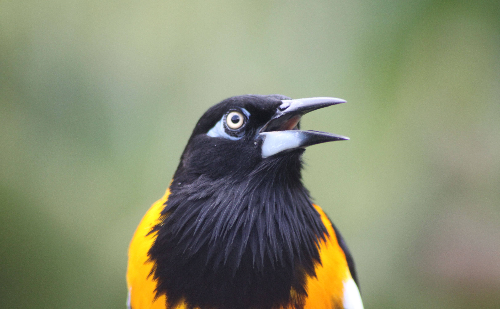
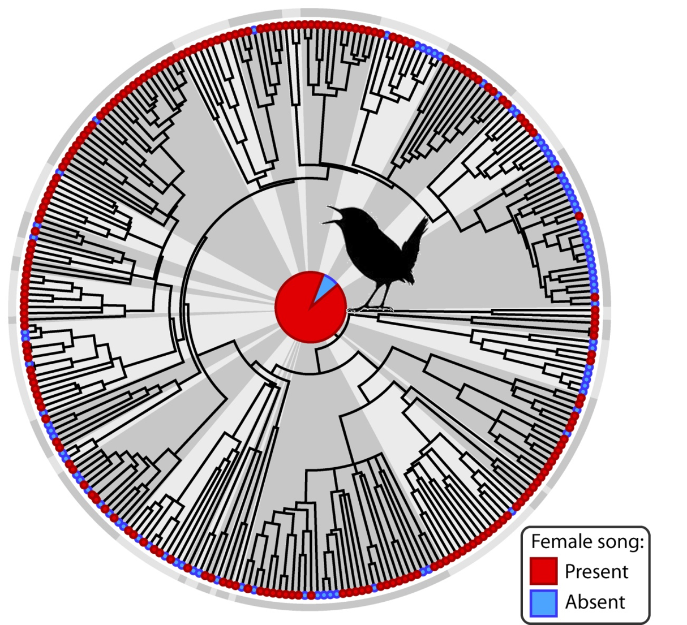

Our goal is to increase awareness and documentation of female bird song for biodiversity collections so that we and other scientists can study this fascinatingly complex behavior.

This citizen science project is part of an international research project involving researchers at the Cornell Lab of Ornithology, University of the Pacific, University of Northern Colorado and Leiden University.
Original funding was provided by the European Union’s H2020 research and innovation program under the Marie Skłodowska-Curie and the National Science Foundation's Postdoctoral Research Fellowship in Biology.
Participate nowIn 2014, we published the most extensive survey of female bird song, which showed that female song is widespread and was likely ancestral in songbirds. Of 323 species with concrete information, 71% had female song; ancestral state reconstruction revealed a 92% likelihood that the last common ancestor of all songbirds had female song.
These findings mean female bird song is more common than previously thought, bird song originally evolved in both females and males, and female songs have often been lost rather than elaborate male song simply being gained.

In 2014, we published the most extensive survey of female bird song, which showed that female song is widespread and was likely ancestral in songbirds. This conclusion was based on information from species accounts for over 1,000 species of songbirds. For each species, we compiled evidence for whether female song is either present or absent. This resulted in concrete information for 323 species. Of these, 71% had female song. We then used a process called ancestral state reconstruction to map this information onto a phylogenetic tree, a representation of the relationships among bird species. This revealed an overwhelming 92% likelihood that the last common ancestor of all songbirds must have had female song.
These findings have major implications for how we think about bird song: (1) female bird song is more common than previously thought, (2) bird song originally evolved in both females and males, and (3) the current day distribution of bird song evolved differently than we traditionally thought - female songs have been lost, rather than simply gains of elaborate male song. Thus bird song is a normal behavior in both female and male songbirds and to understand the evolution of complex bird song, we need to study female in addition to male song. So, now we need to document female songs!
Participate now
Next steps: a tree full of songs
To understand how complex bird songs evolved, we need to understand how both male and female songs have changed over evolutionary time and what selection pressures are related to these changes. This is our goal. Using songs from biological collections and sound libraries, we will measure fine structural details of female songs and matched samples of male songs. This will allow us to quantify and overlay song on a phylogenetic tree of species relationships. We can then reconstruct how male and female song has changed over time. In addition, we can compare variation in male and female song to various environmental factors and behaviors that are indicative of specific selection pressures. This way, we can ask whether certain aspects of a bird’s environment or behavior are related to more elaborate songs. Pin-pointing these patterns will provide essential clues about what has led to the evolution of complex bird song in male and female songbirds. Female songs are currently very under-represented in biological collections. We need your help to gather female bird songs world-wide!
Organizers
Dr. Karan Odom, University of the Pacific
Dr. Lauryn Benedict, University of Northern Colorado
Dr. Katharina Riebel, Institute for Biology, Leiden University
Collaborators
Dr. Mike Webster, Director of the Macaulay Library, Cornell Lab of Ornithology
Dr. Michelle Hall, University of Melbourne
Dr. Naomi Langmore, Australian National University
Dr. Robert Lachlan, Queen Mary University
Dr. Sander Pieterse, Xeno-canto Foundation for Nature Sounds
Prof Menno Schilthuizen, Naturalis Biodiversity Center and Leiden University
Strategy & original web design
Rinus Bot
Website content
Dr. Karan Odom & Dr. Katharina Riebel
This research is being conducted in association with
Leiden University
The Cornell Lab of Ornithology
Xeno-canto
eBird
Macaulay Library
Funding
This project has received funding from the European Union’s Horizon 2020 research and innovation program under the Marie Skłodowska-Curie grant agreement No. 703999-YnotSing and and the U.S. National Science Foundation Postdoctoral Research Fellowship in Biology (Grant No. 1612861).
This material is based upon work supported by the National Science Foundation Postdoctoral Research Fellowship in Biology under Grant No. 1612861. Any opinions, findings, and conclusions or recommendations expressed in this material are those of the authors and do not necessarily reflect the views of the National Science Foundation.
This project received funding from the European Union’s Horizon 2020 research and innovation program under Marie Skłodowska-Curie grant agreement No. 703999-YnotSing and the U.S. National Science Foundation Postdoctoral Research Fellowship in Biology (Grant No. 1612861).